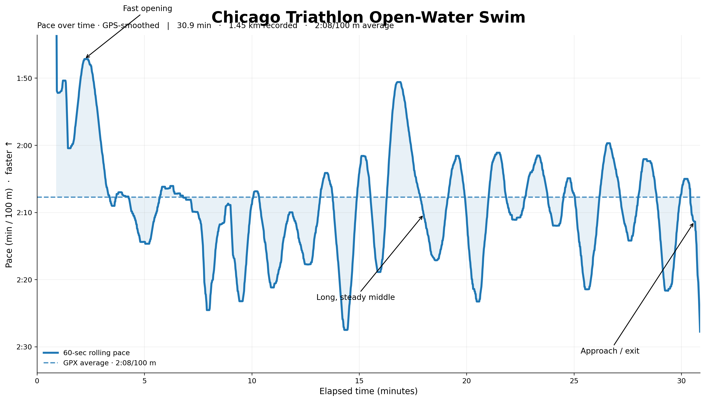
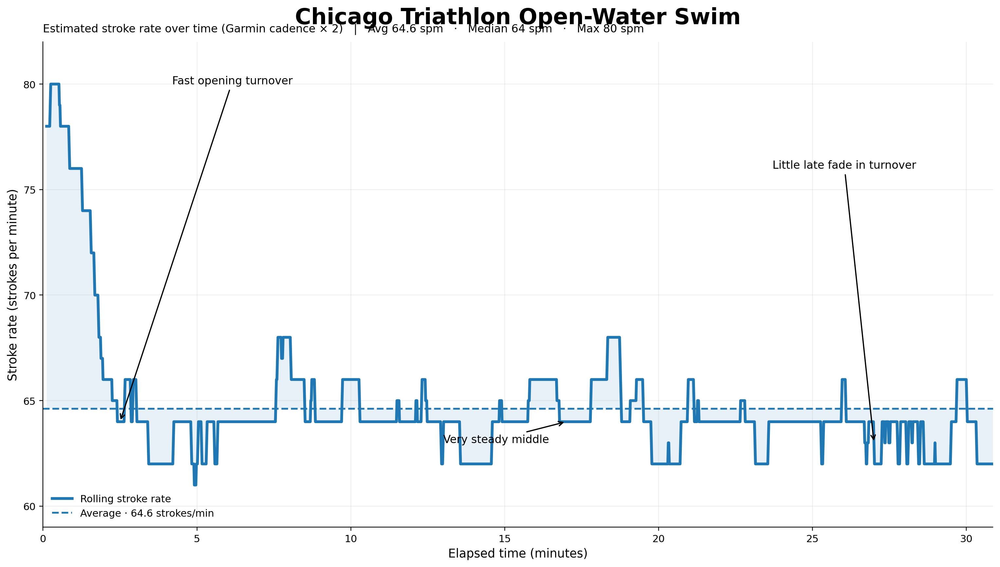
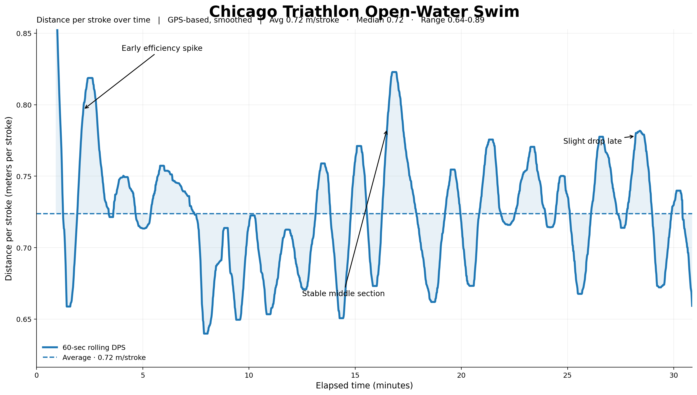
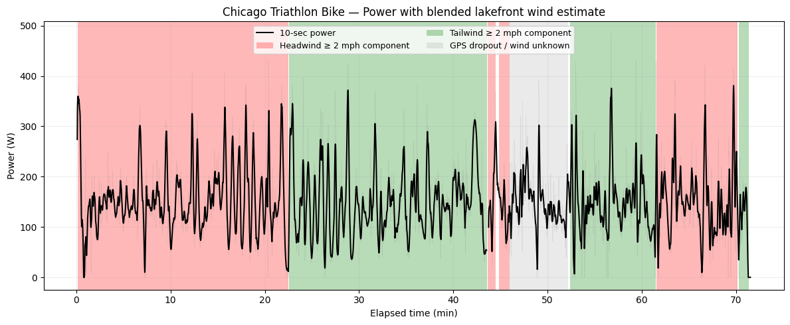
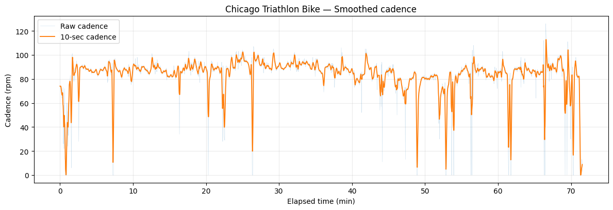
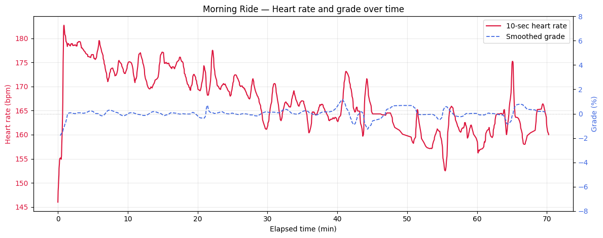
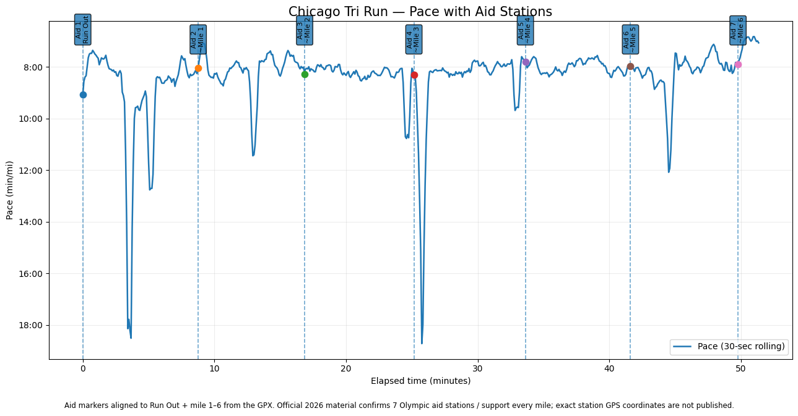

Race report · Olympic triathlon
Chicago Triathlon
Race Report
I ran the 2026 SuperTri Chicago Triathlon — Olympic distance this past weekend. I set a new PR of 2:45:07 in the Olympic distance, which I’m pretty happy about.
01
Race Overview
- Event: Chicago Triathlon — Olympic Distance
- Finish Time: 2:45:07
- Goals:
- Swim: <30min ❌
- Bike: ~21mph ✅
- Run: 7:30 - 8:00/mi ❌
- Splits:
- Swim — 31:01
- T1 — 7:17
- Bike — 1:12:17
- T2 — 3:09
- Run — 51:26
Overall a solidly executed race. I think I could have been a tiny bit faster in the swim and the run, but at this point it’s marginal gains.
02
Lead-Up and Goals
Worked with my coach and Team PR Performance to prepare. Really, I ended up training more for a 70.3 than an Olympic distance — most of my workouts went up to 3-4 hours of bike riding in Z2 and 12mi of running. So really I was probably quite a bit overtrained for the Olympic distance. Was doing 12mi @ 9:00/mi pace and a 10k at 8:00 pace as my last few workouts. So felt pretty prepared for this race.
One thing I was worried about was my wheelset. I have a pair of Bontrager Aeolus wheels, but the rear wheel had been having issues — the freehub was actually just toast, and I needed to replace it with a new one. Got it repaired the day before and it was good to go, but it was a bit of stress to make sure everything worked.
I flew into Chicago on Thursday night. Didn’t sleep a whole lot in the days previous, a lot of stress and stuff going on at home at the moment. Got to Chicago, put my bike together, and rode it — felt good and fast. Dropped it off Saturday, picked up my race packet, and ate a ton of Pakistani kebabs to fuel for the next day.
Some concerns:
Weather
- There was a beach warning hazard the morning of the race, but the wind conditions ended up stabilizing enough for a pretty calm swim.
- Weather was going to be cool (60deg) and humid (88% humidity). Was going to be a hot day.
- Wind was expected to be from the N, starting at 3mph and ending up around 9-10mph as the day went on.
Nutrition
- I hadn’t really defined a nutrition strategy going into the race, so I panic-texted my coach the night before. We worked out a strategy:
- Gel before race
- Gel in T1
- 2 packets of Mortal Hydration (800-1000mg of sodium) in a 750mL bottle
- 2 gels on the bike
- Gel in T2
- Gel halfway through the run
- Water bottle with 500mg of sodium (LiquidIV in this case)
This ended up working great for me.
03
Race Morning
Woke up at 4AM, prayed Tahajjud and Fajr, ate a bagel with cream cheese. We were, as always, running late, so I got to transition at 5:35 (10min left until transition closed). Got everything set up in time, barely remembered to put on my timing chip, but got everything ready.
Honestly, I didn’t have time to feel nervous. Felt pretty relaxed. Met up with a few friends and we all stood in line. I used the bathroom to pee. One thing I did mess up was that I had my wetsuit and swim cap on for way too long. I was sweating hard and didn’t really think about it, but I was pretty dehydrated because of it. Not a good look coming into the swim.
Water was calm and the course seems pretty cool. Swim ~400m to the Field museum, turn around, swim the rest to Monroe Harbor.
04
Swim — 31:01
Jumped headfirst into the water and started swimming fast to find an open lane. Took about 200m to calm myself down and figure out where I was trying to go. Aimed for the buoys to minimize the amount of swimming. Swam pretty straight for the most part, just between buoys on the right. Not too many people in front or behind me. I breathe to my right so had a good view of the shore and where I was.
Hit the buoy and basically swam buoy to buoy until the midpoint. Nothing crazy here, I think I caught some of the slower swimmers from the previous waves and so was trying to find open lanes. The sun is also in my eyes, thankfully I had tinted goggles so I could still see.
After the midpoint, I swim closer to the shore, for the sole reason that there’s just not as many people here. I realize that now I was probably off course a little bit, but otherwise fewlt fine, just swimming a casual, not too hard pace. About 400m from the finish, I realize that there’s a cramp in both my legs, probably from sweating out a ton wearing the wetsuit. It doesn’t affect my swimming, maybe slowed me down a bit. Figured I’d just deal with it when I got out of the water.
Looking at my pacing, I basically just kept the same pace between the turnaround buoy and the end at 2:00/100yd pace. So room for improvement there. Mostly I swam pretty straight, with some issues between the midpoint and the end where I went slightly right.

I also have data on my stroke rate. Seems like in the beginning I was fairly high stroke rate, and then settled down in the middle to about 64spm.
Probably things I’d think about:
- Getting my left arm catch to a more consistent high elbow. I don’t think my left arm propelled as much as it should
- Improving my cadence and DPS quite a bit — I think the DPS could be a bit higher. Would like to get to a consistent 0.8m/stroke if possible — that requires quite a bit of effort. Here’s my current DPS graph:


05
T1 — 7:17
Came out of the swim and immediately felt the cramp that I had gotten in both legs. I think this was because of the wetsuit and sweated a ton out. There’s like a 0.25mi run between the swim out and the transition area, and it was really painful. Walked for a bit out. tried to run, didn’t make it far, walked a bit more, saw a friend who motivated me and found some run legs.
I had a gel in transition, and I decided (very wisely) to put on some socks. I think that allowed me to calm my body down a bit and get some feeling back into my legs. I grabbed the bike and ran out to the bike out.
06
Bike — 1:12:17
Got on the bike and I slowed down immediately because I couldn’t put my feet in my shoes. I had attached my shoes to my bikes in transition and I couldn’t get the flying mount on. So I wasted like 2-3 minutes trying to get my feet in my bike shoes. Should have just done it in transition.
Once I was in my shoes, I started to go for it. I sped up into the wind, going in the aero position and trying to keep my speed up. Mostly spent the time in full aero, and was passing a lot of people. I don’t really know how good my aero position is — need to do a proper race fit. But was passing almost everybody except for the elite bikers / people on triathlon bikes.
The first 7-8mi were into a headwind, but I never really felt it. Tried to average 180W for the most part, but was going very very fast — 20mph I think I averaged going into the headwind. My cadence was high too — 85-95 rpms for the most part. My HR was very elevated though. I was at mostly 175-185bpm, which is really high for my pacing. But it didn’t feel too bad — I think this was residual from the swim for the most part, and made worse by small rolling hills.
Hit the turnaround and into the tailwind, and I start speeding up even more. I hit 21mph at this point and am cruising. No issues in the world. My heart rate even comes down at this point as I relax and get into the groove. This continues until we hit the technical section in Lower Wacker.
In Lower Wacker, I feel my legs are starting to really hurt a little bit, so I back off on the power and cadence to let them recover for the run. This does mean my average speed dropped a little bit, and my cadence did as well. It was also really narrow, hard to pass people, and I did get caught up behind groups that weren’t following the drafting rules correctly. So I definitely slowed down quite a bit. I also noticed that I was pushing a slightly higher gear. I thought Lower Wacker would be better aero-wise as there’s no wind and much less air resistance, so I could push a higher gear without much effect. That didn’t really happen and my cadence dropped to the low 80s when I should have kept it much higher.
My nutrition was simple: 2 packets of mortal hydration mango, 2 precision fuel and hydration 30g carb gels, one at min 23, one at min 50. Felt pretty good stomach wise, I do wish I had some water to down the hydration with.
Overall I felt really proud of this effort. I think I never expected myself to be so smooth and aero. I’m still a bit shocked at how fast I was going despite not pushing a crazy power level. There were spots where I did put down tons of power (up a hill, out of a corner) but my average naturalized power for the entire ride was just 165W. Either I was absurdly aero or my form was just very smooth. The course definitely helped, my tri bike and aero wheels definitely helped too.
Things I think I could improve on:
- Fix the shoe issue. Just put the dang shoes on in transition and don’t try to running start them. Would have saved 1-2 min at the least
- Keep cadence around 85-90 the entire time.
- Buy an aero helmet to save like 10-20W (probably not that big a deal)
- Put my water bottle in between my handlebars
- My water bottle was on the seat post stem, so I had to go upright every time I wanted to drink water and suffer a small speed/power/cadence penalty. I think putting my water / hydration in a bottle either on the bottom diagonal or between the handlebars would help significantly with that, so I don’t have to stop and reach down to take some water
- Add a bottle of carb water
- More for long distance races tbh. Don’t know if it’s needed for this.
Power
- Average power including zeros — ~149 W
- Average power excluding zeros — 152.5 W
- Normalized power — ~165 W
- Intensity Factor — ~0.76
- Variability Index — ~1.10
- Maximum power — 484 W

Power Distribution
- Significant number of short surges.
- Approximately 3:39 above 300 W.
Cadence
- Average cadence while pedaling — ~84.7 rpm
- Early race cadence generally around 87–92 rpm.
- Later race cadence dropped into approximately the 77 rpm range.
- First-half cadence was noticeably higher than second-half cadence.
Heart Rate
My heart rate was really interesting. It started really high, and then went down as the race progressed, with a few spikes whenever there was a hill or a power surge. I think it was me coming out of the swim and then finding my groove as the bike race went on.
Average HR: 168bpm


07
T2 — 3:09
Got out of my shoes right before the dismount line (and actually pulled it off!) Then re-racked my bike. Ate a gel, put on my run shoes, took a big swig of my water bottle, put on my race belt, and I was off. The one thing I didn’t have was a hat, which I kind of regret actually, but decided to go with it.
My legs were hurting a little bit, especially my quads post bike ride. But managed to push through it. Overall a normal transition for the most part.
08
Run — 51:26
Got out of transition and saw my parents and wife, cheering me on. Didn’t feel a whole ton of pain until about a half mile, and then the muscles in both legs started to really hurt. I walked for a little bit, and actually just stopped for 15 sec to try and stretch out my legs. Decided to continue pushing myself and see where I broke and continued running. The pain subsided after a mile or so, came back at mile 4, and stayed there throughout the most part. Definitely a hard first mile and then settled into a pace.
For the most part, the hard thing was the temperature and the sun bearing down. It was hot and humid, and I was definitely feeling it in my legs and body. I walked through all the aid stations and drank tons of water and electrolytes.
At mile 4 I saw a friend around 2-3 minutes behind me, running fast. I got the motivation to not get beaten again (he had pushed past me last year) and so I kept my pace up at the 8:00/mi mark. Legs are pretty toast at this point, but I tick the miles down to the end as we were past the u-turn.
At the end there’s a hill to the top of Columbus, and then it’s a downhill finish (like every Chicago race). That last hill was painful, just trying to get through to the last sprint. Made it over and down into the finishing chute, and set a new PR.

09
What the Data Says
I had ChatGPT analyze some of my race files, and came out with some statistics / places for improvement.
- At approximately 165 W NP with a 218 W FTP, the bike was only around 76% FTP.
- A VI of ~1.10 suggests substantial variability.
- A lot of random surges instead of a smooth pedaling cadence
- Cadence dropped from the upper 80s earlier in the race toward the upper 70s later.
10
What’s next
I’m not entirely sure. I would like to improve my running form even further, to a 1:30 - 1:40 half marathon pace. That’s aggressive but I think with 3 months of dedicated run training I could do it.
Otherwise it’s really just continue working towards a better aero position and better swim technique. I think continuing to work in the pool with faster people will help me get faster by attrition.
I think I’m going to punt on triathlon races for the rest of this year due to time and calendar pressures, but preparing for next year.